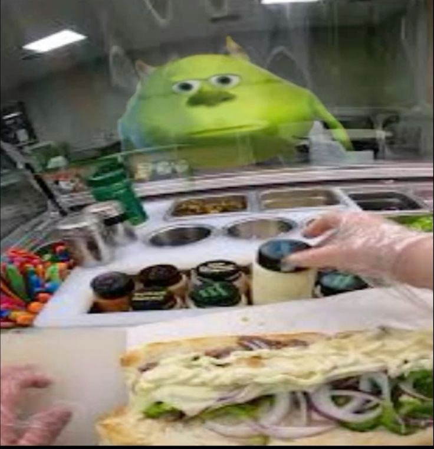
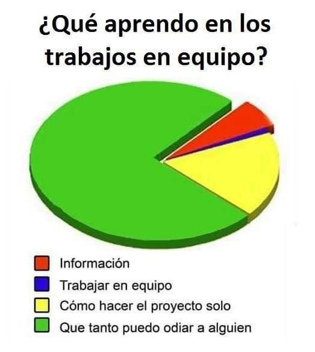
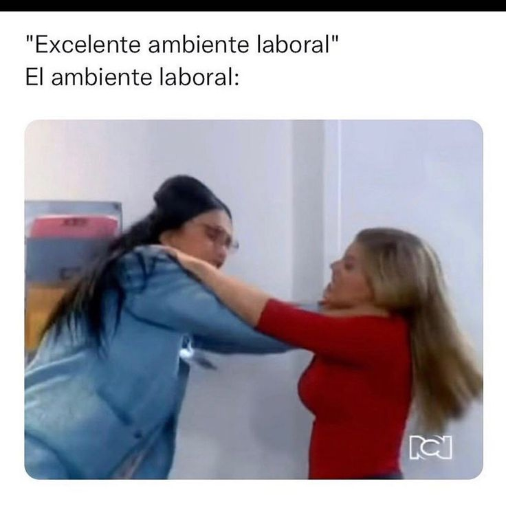
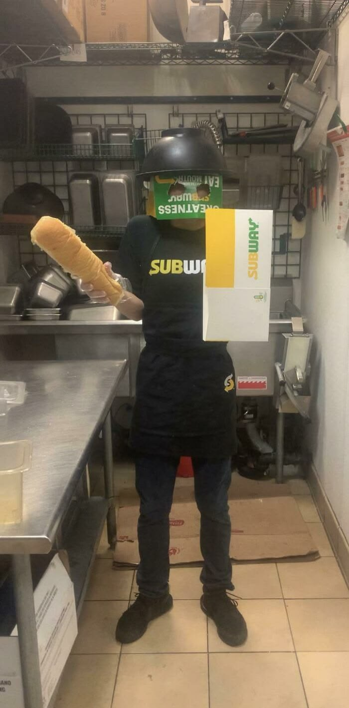

Pedido #1 · Cliente indeciso
“Lo de siempre, pero sin nada de lo de siempre.”
Tú: sonríe, respira, haz el sándwich. Nadie te paga lo suficiente por leer mentes.
Esta línea no tiene horas pico, ni clientes, ni jefes. Solo una parada para respirar. Entra cuando quieras, sal cuando quieras, tampoco hay personas que te juzguen como eres o te juzguen sin conocerte este lugar es tuyo.
Como Ash y Eiji: nadie debería cargar con todo solo.
Hombros abajo. Suelta la mandíbula. Un respiro largo por la nariz, otro más largo por la boca. Ya sobreviviste a todos los turnos de tu vida hasta hoy, y esa estadística es perfecta.
Tickets de pedido para sufrir con humor.
Pedido #1 · Cliente indeciso
“Lo de siempre, pero sin nada de lo de siempre.”
Tú: sonríe, respira, haz el sándwich. Nadie te paga lo suficiente por leer mentes.
Pedido #2 · Hora pico
Catorce personas en cola, una sola persona cortando pan, y el timbre del horno sonando.
Eso no es un trabajo, es un deporte extremo. Mereces medalla y descanso.
Pedido #3 · Verduras
“Un poquito de cada verdura… no tanto… ahí, pero con más.”
El pan italiano ha visto cosas que no puede contar.
Pedido sorpresa
Toca el botón y llega un ticket nuevo.




No tienes que estar bien hoy. Cansarte no es fallar, es haber aguantado mucho.
Que tu casa haya cambiado tanto no dice nada malo de ti. Tu valor no depende de dónde duermes ni de quién te cae bien en el trabajo.
No espero nada a cambio de esto. Solo quería que, cuando te sientas sola, tengas un lugar donde alguien te recuerde que importas.
— JP
Tomate un café, o un té, o un vaso de agua. Esta página se queda aquí. Puedes volver las veces que quieras.
Dale play cuando quieras.